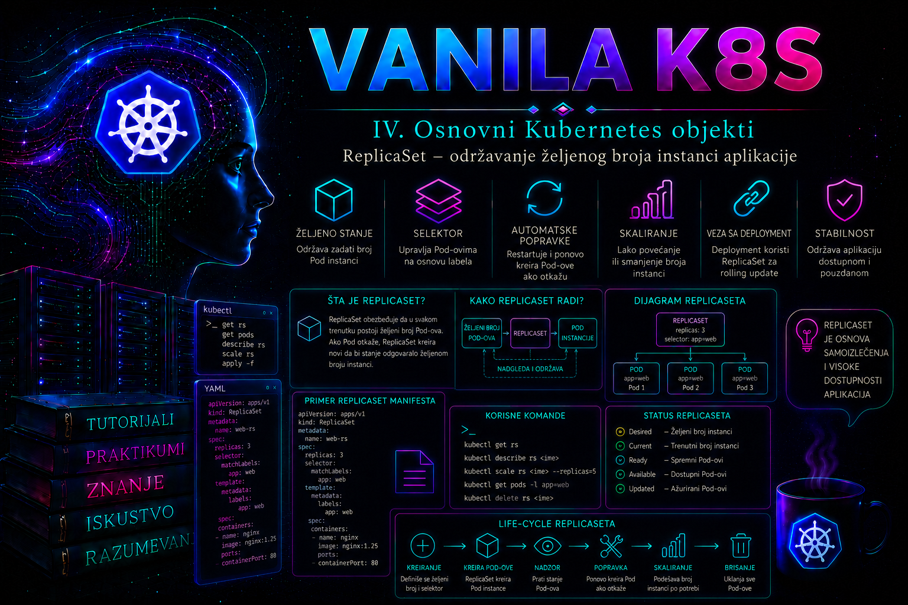

Vanilla Kubernetes

Pod predstavlja najmanju izvršnu jedinicu u Kubernetes-u, ali samostalno kreiran Pod nije dovoljno pouzdan model za većinu produkcionih aplikacija. Ako se takav Pod obriše, ako čvor na kome radi postane nedostupan ili ako administrator tokom održavanja ukloni objekat, Kubernetes nema deklarativnu informaciju da bi trebalo da ga ponovo napravi. ReplicaSet rešava upravo taj problem: administrator navodi koliko istovetnih instanci aplikacije želi, a odgovarajući kontroler neprekidno usklađuje stvarno stanje klastera sa tim željenim stanjem.
ReplicaSet nije proces koji se izvršava unutar aplikacionog kontejnera. To je Kubernetes API objekat iz grupe apps/v1, dok se stvarni reconciliation mehanizam izvršava kao deo kontrolne ravni, odnosno u okviru komponente kube-controller-manager. Zbog toga ReplicaSet nastavlja da održava aplikaciju čak i kada administrator zatvori terminal ili izgubi vezu sa klasterom. Njegov rad nije zasnovan na jednokratnoj komandi, već na trajnoj kontrolnoj petlji koja poredi deklarisani broj replika sa brojem Pod-ova koji odgovaraju selektoru.
Uloga ReplicaSet objekta
Osnovna namena ReplicaSet objekta jeste održavanje stabilnog broja istovetnih Pod replika. Polje spec.replicas predstavlja željeno stanje. Ako je navedeno da aplikacija mora imati tri replike, kontroler pokušava da obezbedi tri Pod-a čije oznake odgovaraju selektoru ReplicaSet-a. Kada postoji manje Pod-ova, kreiraju se novi. Kada ih postoji više, višak se uklanja. Ovakvo ponašanje često se opisuje kao samoisceljivanje, ali je važno razumeti njegovu granicu: ReplicaSet ne popravlja aplikaciju unutar postojećeg Pod-a, već održava broj Pod objekata koji odgovaraju njegovom kriterijumu.
ReplicaSet je pogodan za horizontalno umnožavanje stateless aplikacionih procesa kod kojih sve instance mogu da koriste isti šablon i kod kojih pojedinačni Pod nema trajan identitet. Tipični primeri su HTTP front-end procesi, API servisi, worker procesi koji čitaju poslove iz zajedničkog reda i druge aplikacije čije instance mogu biti zamenjene bez posebnog postupka oporavka lokalnog stanja.
ReplicaSet sam po sebi ne obezbeđuje mrežno otkrivanje Pod-ova, stabilnu pristupnu adresu, raspodelu saobraćaja, trajno skladište, bezbedno čuvanje tajni, automatsko ažuriranje aplikacije niti aplikacionu visoku dostupnost. Za stabilan mrežni pristup obično je potreban Service. Za kontrolisane promene verzije aplikacije uobičajeno se koristi Deployment, koji iznad ReplicaSet objekata obezbeđuje rollout, istoriju revizija i rollback. Za aplikacije kojima su potrebni stabilni identiteti, uređeni redosled pokretanja ili trajni diskovi povezani sa pojedinačnim replikama prikladniji je StatefulSet.
Kontrolna petlja i željeno stanje
Kubernetes kontroleri rade po principu kontinuiranog usklađivanja. ReplicaSet kontroler posmatra ReplicaSet i Pod objekte preko Kubernetes API servera. Za svaki ReplicaSet određuje koji Pod-ovi odgovaraju njegovom selektoru, poredi njihov broj sa vrednošću spec.replicas i preduzima korektivnu radnju. Kreiranje i brisanje Pod-ova zato nisu reakcije na jednu lokalnu skriptu, već API operacije kontrolne ravni.
Ako je željeni broj replika tri, a postoje samo dve odgovarajuće instance, kontroler kreira novi Pod koristeći spec.template. Scheduler zatim bira odgovarajući čvor, kubelet na tom čvoru priprema Pod i pokreće kontejnere. Ako postoje četiri odgovarajuća Pod-a, ReplicaSet bira jedan za uklanjanje kako bi broj ponovo postao tri. Administrator ne treba da zasniva aplikacionu logiku na pretpostavci da će određena replika biti trajno sačuvana.
Kontroler radi eventualno konzistentno. Nakon promene manifestacije nije nužno da novi broj Pod-ova bude vidljiv u istom trenutku kada API server prihvati zahtev. Potrebno je kratko vreme da kontroler registruje promenu, kreira ili ukloni objekte, da scheduler rasporedi nove Pod-ove i da kubelet pokrene kontejnere. Zato uspešan rezultat komande kubectl apply potvrđuje da je API zahtev prihvaćen, ali ne potvrđuje da je aplikacija postala funkcionalna.
Važna produkciona razlika postoji između broja postojećih, pokrenutih i spremnih replika. Pod može postojati, a da bude u stanju Pending, ImagePullBackOff, CrashLoopBackOff ili da njegovi kontejneri još nisu spremni. ReplicaSet prvenstveno održava broj Pod objekata. Readiness probe i statusni podaci omogućavaju administratoru da utvrdi da li su te replike zaista sposobne da primaju saobraćaj.
Struktura ReplicaSet manifesta
Produkciono upotrebljiv ReplicaSet manifest sadrži identitet objekta, selektor, željeni broj replika i Pod šablon. Selektor i oznake u šablonu predstavljaju najvažniju vezu u manifestu. Selektor nije samo opis aplikacije, već operativni kriterijum na osnovu kojeg kontroler odlučuje koje Pod-ove broji i kojima upravlja.
apiVersion: apps/v1
kind: ReplicaSet
metadata:
name: web-rs
namespace: it-tutorijali
spec:
replicas: 3
selector:
matchLabels:
app.kubernetes.io/name: web
app.kubernetes.io/instance: web-rs
template:
metadata:
labels:
app.kubernetes.io/name: web
app.kubernetes.io/instance: web-rs
spec:
containers:
- name: nginx
image: nginx:1.27.5-alpine
ports:
- name: http
containerPort: 80
resources:
requests:
cpu: 50m
memory: 32Mi
limits:
cpu: 200m
memory: 128Mi
readinessProbe:
httpGet:
path: /
port: http
initialDelaySeconds: 2
periodSeconds: 5
livenessProbe:
httpGet:
path: /
port: http
initialDelaySeconds: 10
periodSeconds: 10
Polje apiVersion: apps/v1 određuje aktuelnu stabilnu API grupu za ReplicaSet. Polje kind identifikuje tip resursa. Sekcija metadata određuje ime i namespace objekta. ReplicaSet je namespace resurs, pa može da upravlja samo Pod-ovima u istom namespace-u.
Polje spec.replicas određuje željeni broj Pod-ova. Ako se izostavi, API podrazumevano koristi jednu repliku. U administrativnoj praksi vrednost treba navesti eksplicitno kako bi namera bila jasna u repozitorijumu konfiguracije, tokom revizije promene i prilikom poređenja okruženja.
Sekcija spec.selector određuje koje Pod-ove ReplicaSet smatra svojim skupom. matchLabels zahteva da Pod poseduje sve navedene parove oznaka. Mogu se koristiti i izrazi u okviru matchExpressions, na primer operatori In, NotIn, Exists i DoesNotExist. Svi uslovi selektora primenjuju se zajedno, odnosno Pod mora zadovoljiti celokupan selektor.
Oznake definisane u spec.template.metadata.labels moraju zadovoljiti selektor ReplicaSet-a. U suprotnom API server odbija manifest jer bi kontroler kreirao Pod-ove koje zatim ne bi mogao da prepozna kao svoje. Selektor ReplicaSet-a u apps/v1 ne može se naknadno slobodno menjati. Promena identiteta aplikacionog skupa zbog toga se planira kao kreiranje novog objekta, migracija saobraćaja i kontrolisano uklanjanje starog, a ne kao improvizovana izmena selektora u produkciji.
Sekcija spec.template predstavlja šablon budućih Pod-ova. Ona nema sopstvena polja apiVersion i kind, jer se nalazi unutar ReplicaSet objekta. Svaki Pod kreiran iz šablona dobija generisano ime, odgovarajuće oznake i referencu na vlasnički ReplicaSet u polju metadata.ownerReferences.
Selektori, oznake i vlasništvo nad Pod-ovima
Najveći operativni rizik kod samostalnog ReplicaSet-a predstavlja preširok ili pogrešno izabran selektor. ReplicaSet ne bira Pod-ove prema njihovom imenu, slici kontejnera ili nameni koju administrator ima na umu, već isključivo prema deklarisanom label selectoru. Ako u istom namespace-u postoji zasebno kreiran Pod sa odgovarajućim oznakama i bez kontrolera koji ga već poseduje, ReplicaSet može da ga usvoji i uključi u svoj skup.
Zbog toga generički selektor, kao što je samo app: web, može izazvati sudar sa drugim testnim, migracionim ili dijagnostičkim Pod-ovima. Bezbedniji obrazac koristi više stabilnih oznaka, na primer naziv aplikacije, instancu i komponentu. Selektor ipak ne treba vezivati za promenljivu verziju slike ako će se ista logička aplikacija održavati kroz više izdanja.
Vlasništvo se proverava preko ownerReferences, a ne samo preko oznaka. Pod koji je kreirao ReplicaSet obično sadrži referencu na ReplicaSet i postavljen controller: true. Garbage collector koristi ovu vezu pri kaskadnom brisanju. Standardno brisanje ReplicaSet-a zato uklanja i Pod-ove koje on poseduje, osim ako administrator izričito izabere orphan propagaciju.
Promena oznaka na aktivnom Pod-u može promeniti članstvo u selektovanom skupu. Ako se sa jednog Pod-a ukloni oznaka potrebna selektoru, ReplicaSet ga više ne računa kao odgovarajuću repliku i kreira zamenu. Ovakav postupak može biti koristan za kontrolisanu dijagnostičku izolaciju, ali istovremeno povećava broj Pod-ova i može ostaviti izdvojeni objekat koji treba posebno evidentirati i ukloniti. Zato se label operacije u produkciji tretiraju kao promena ponašanja kontrolera, a ne kao bezazlena kozmetička izmena.
ReplicaSet, Deployment i drugi workload kontroleri
| Objekat | Primarna namena | Važna operativna osobina | Tipična upotreba |
|---|---|---|---|
| ReplicaSet | Održava zadati broj zamenljivih Pod replika | Nema ugrađenu strategiju verzionisanog rollout-a i istoriju aplikacionih revizija | Učenje kontrolera, specifični ručno upravljani skupovi i objekti koje kreira Deployment |
| Deployment | Deklarativno upravlja stateless aplikacijom i pripadajućim ReplicaSet objektima | Podržava rolling update, rollout status, istoriju i rollback | Standardni izbor za većinu stateless produkcionih aplikacija |
| StatefulSet | Upravlja Pod-ovima kojima su potrebni stabilni identiteti i uređeno ponašanje | Podržava stabilna imena i vezivanje trajnog skladišta po replici | Baze podataka, klasterisani stateful sistemi i aplikacije sa identitetom člana |
| DaemonSet | Obezbeđuje Pod na svim ili izabranim čvorovima | Broj Pod-ova zavisi od skupa odgovarajućih čvorova | Agenti za logove, monitoring, mrežne i storage komponente |
| Job | Izvršava posao do uspešnog završetka | Upravlja kompletiranjem, a ne trajno aktivnim replikama | Batch obrada, migracije i jednokratni poslovi |
U većini produkcionih implementacija administrator ne kreira ReplicaSet direktno. Deployment kreira i poseduje jedan ili više ReplicaSet objekata i koristi ih za postepeno uvođenje novog Pod šablona. Direktna izmena ReplicaSet-a kojim upravlja Deployment može biti ubrzo poništena ili može narušiti očekivani rollout. Pre svake promene zato treba proveriti kolonu OWNER REFERENCES ili polje metadata.ownerReferences.
Samostalni ReplicaSet nema automatizovanu istoriju revizija i komanda kubectl rollout undo nije mehanizam za njegov rollback. Ako administrator promeni sliku kontejnera u samostalnom ReplicaSet-u, postojeći Pod-ovi se ne zamenjuju automatski samo zato što se promenio šablon. Novi šablon koristiće se prilikom kasnijeg kreiranja Pod-ova, dok stare instance mogu nastaviti da rade. To može proizvesti nekontrolisanu mešavinu verzija. Za redovne aplikacione nadogradnje treba koristiti Deployment.
Skaliranje, dostupnost i ograničenja
Broj replika može se promeniti deklarativnom izmenom manifesta ili komandom kubectl scale. Deklarativna izmena u verzionisanom repozitorijumu uglavnom je poželjnija jer ostavlja audit trag i sprečava da sledeći apply vrati staru vrednost. Imperativno skaliranje je korisno u incidentu ili privremenom operativnom postupku, ali promena mora biti dokumentovana i zatim usklađena sa izvorom konfiguracione istine.
Komanda kubectl scale može koristiti preduslov --current-replicas. Time se sprečava da administrator pregazi promenu koju je u međuvremenu izvršio drugi operator ili automatizacija. Na primer, zahtev za promenu sa tri na pet replika može biti odbijen ako objekat više nema tri replike. To je bezbedniji obrazac u okruženjima sa više administratora.
Veći broj replika ne garantuje visoku dostupnost. Scheduler može rasporediti više Pod-ova na isti čvor ako nisu definisana pravila raspoređivanja. Kvar tog čvora tada privremeno uklanja više replika. Za ozbiljniju otpornost koriste se topology spread constraints, pod anti-affinity, odgovarajući broj radnih čvorova, requests vrednosti, PodDisruptionBudget i pravilno projektovana mrežna pristupna tačka.
ReplicaSet takođe ne garantuje da će aplikacija odgovoriti uspešno. Ako je slika neispravna, konfiguracija nedostupna, readiness provera pogrešna ili čvorovi nemaju dovoljno resursa, kontroler može imati željeni broj Pod objekata bez željenog broja funkcionalnih replika. Administrator zato posmatra status ReplicaSet-a, stanje Pod-ova, događaje, probe, potrošnju resursa, aplikacione logove i Service endpoints.
Deployment kao upravljač deklarativne isporuke
Deployment je viši kontroler za stateless workload-e: administrator menja njegov spec.template, a Deployment kontroler kreira novi ReplicaSet, postepeno menja broj replika starog i novog skupa i evidentira reviziju. Lanac vlasništva je zato Deployment → ReplicaSet → Pod. Direktna izmena Pod-a ili ReplicaSet-a zaobilazi izvor željenog stanja i nije pouzdana metoda isporuke.
apiVersion: apps/v1
kind: Deployment
metadata:
name: web
namespace: it-tutorijali
annotations:
kubernetes.io/change-cause: "Početna isporuka nginx 1.27.5"
spec:
replicas: 4
revisionHistoryLimit: 5
progressDeadlineSeconds: 180
minReadySeconds: 10
strategy:
type: RollingUpdate
rollingUpdate:
maxUnavailable: 1
maxSurge: 1
selector:
matchLabels:
app.kubernetes.io/name: web
app.kubernetes.io/instance: web
template:
metadata:
labels:
app.kubernetes.io/name: web
app.kubernetes.io/instance: web
app.kubernetes.io/component: frontend
spec:
containers:
- name: nginx
image: nginx:1.27.5-alpine
ports:
- name: http
containerPort: 80
resources:
requests:
cpu: 50m
memory: 32Mi
limits:
cpu: 200m
memory: 128Mi
readinessProbe:
httpGet:
path: /
port: http
initialDelaySeconds: 2
periodSeconds: 5
Nova revizija nastaje samo kada se promeni Pod šablon, na primer slika, promenljiva okruženja, oznaka ili anotacija unutar spec.template. Skaliranje Deployment-a ne stvara novu reviziju. Anotacija kubernetes.io/change-cause nije obavezna, ali istoriju čini razumljivijom; razlog promene ipak treba trajno čuvati u Git i change evidenciji.
RollingUpdate, Recreate i proračun kapaciteta
Podrazumevana strategija RollingUpdate postepeno povećava novi ReplicaSet i smanjuje stari. maxUnavailable određuje najveći dozvoljeni broj nedostupnih replika u odnosu na željeni broj, dok maxSurge određuje koliko dodatnih Pod-ova sme privremeno postojati. Vrednosti mogu biti apsolutne ili procentualne. Procenat za maxUnavailable zaokružuje se naniže, a za maxSurge naviše; oba parametra ne smeju istovremeno biti nula.
| Strategija | Ponašanje | Prednost | Rizik i uslov |
|---|---|---|---|
| RollingUpdate | Stari i novi ReplicaSet privremeno rade paralelno | Može očuvati dostupnost tokom isporuke | Aplikacione verzije, šema podataka i protokol moraju biti kompatibilni tokom preklapanja; potreban je dodatni kapacitet za surge |
| Recreate | Stari Pod-ovi se uklanjaju pre kreiranja novih | Ne zahteva paralelan rad verzija | Podrazumeva prekid usluge; čak i tada ručno kreirani stari Pod može kratko preklopiti novu verziju |
Za četiri replike i vrednosti maxUnavailable: 1 i maxSurge: 1 tokom rollout-a može postojati najviše pet Pod-ova, dok najmanje tri moraju ostati dostupna. To nije isto što i garantovan poslovni kapacitet: readiness proba mora pouzdano predstavljati sposobnost instance da prima saobraćaj, a cluster quota i čvorovi moraju dozvoliti dodatni Pod. PodDisruptionBudget ograničava dobrovoljne poremećaje, ali ne upravlja Deployment rollout-om i ne može sprečiti kvar čvora.
Istorija revizija, pauza, nastavak i rollback
Deployment čuva stare ReplicaSet objekte sa nula replika do granice revisionHistoryLimit (podrazumevano 10). Oni omogućavaju rollback Pod šablona, ali nisu backup aplikacionih podataka, ConfigMap ili Secret sadržaja, Service konfiguracije ni spoljnog sistema. Vrednost nula uklanja mogućnost povratka na raniju reviziju čim se stari ReplicaSet očisti.
kubectl rollout status deployment/web -n it-tutorijali --timeout=180s
kubectl rollout history deployment/web -n it-tutorijali
kubectl rollout history deployment/web -n it-tutorijali --revision=2
kubectl rollout pause deployment/web -n it-tutorijali
kubectl rollout resume deployment/web -n it-tutorijali
kubectl rollout undo deployment/web -n it-tutorijali --to-revision=2
rollout status po pravilu prati najnoviju reviziju; opcija --revision vezuje proveru za konkretnu reviziju i prijavljuje ako je nadjača novija promena. Pauzirani Deployment ne prima nove rollout promene dok se ne nastavi, što omogućava grupisanje više izmena u jednu reviziju. Rollback je promena stanja i pre izvršenja treba pregledati ciljnu reviziju, kompatibilnost konfiguracije i baze podataka, aktuelni saobraćaj i odobrenje za promenu. kubectl rollout undo --dry-run=server može prikazati API rezultat bez trajnog upisa, ali ne dokazuje da će stara verzija aplikacije biti funkcionalna.
Status Deployment-a i neuspešno napredovanje
Polja status.updatedReplicas, readyReplicas, availableReplicas i unavailableReplicas razdvajaju kreirane, spremne i dovoljno dugo dostupne instance. minReadySeconds određuje koliko Pod mora ostati spreman bez pada kontejnera da bi bio raspoloživ. progressDeadlineSeconds mora biti veći od minReadySeconds; po isteku Deployment dobija uslov Progressing=False sa razlogom ProgressDeadlineExceeded. Kubernetes tada prijavljuje zastoj, ali sam ne izvodi rollback.
Česti uzroci zastoja su nepostojeća slika, nedovoljan kapacitet ili quota, neispravan readiness, nedostajuća konfiguracija, admission zabrana i runtime greška. Dokazi se prikupljaju redom: Deployment conditions i događaji, odnos starih i novih ReplicaSet-ova, Pod status i događaji, zatim aktuelni i prethodni kontejnerski logovi. Tek nakon potvrde uzroka bira se korekcija ili povratak poznate dobre revizije.
kubectl get deployment web -n it-tutorijali
kubectl describe deployment web -n it-tutorijali
kubectl get rs -n it-tutorijali -l app.kubernetes.io/instance=web
kubectl get pods -n it-tutorijali -l app.kubernetes.io/instance=web -o wide
kubectl get events -n it-tutorijali --sort-by=.metadata.creationTimestampDijagnostika ReplicaSet i Deployment problema
Početna dijagnostika treba da odgovori na četiri pitanja: da li je API objekat pravilno definisan, da li kontroler kreira očekivani broj Pod-ova, da li scheduler može da ih rasporedi i da li se kontejneri uspešno pokreću i postaju spremni. Komande se biraju tako da razdvoje ove slojeve, umesto da administrator nasumično menja manifest.
kubectl get replicaset web-rs -n it-tutorijali
kubectl describe replicaset web-rs -n it-tutorijali
kubectl get pods -n it-tutorijali \
-l app.kubernetes.io/name=web,app.kubernetes.io/instance=web-rs \
-o wide
kubectl get events -n it-tutorijali \
--sort-by=.metadata.creationTimestamp
U izlazu kubectl get replicaset kolona DESIRED predstavlja deklarisani broj replika, CURRENT broj trenutno evidentiranih Pod-ova, a READY broj spremnih Pod-ova. Kratkotrajna razlika neposredno nakon promene može biti normalna. Razlika koja traje zahteva pregled opisa ReplicaSet-a, Pod događaja i pojedinačnih stanja kontejnera.
Ako je CURRENT manji od DESIRED, moguće je da API ograničenja, quota, admission politika ili drugi kontrolni mehanizam sprečavaju kreiranje. Ako Pod-ovi postoje ali ostaju Pending, problem je češće u resursima, taint-ovima, affinity pravilima, storage zahtevima ili scheduler ograničenjima. Ako su u stanju ImagePullBackOff, proveravaju se naziv slike, registry dostupnost i image pull kredencijali. Kod CrashLoopBackOff analiziraju se aplikacioni logovi, argumenti procesa, konfiguracija i prethodni izlaz kontejnera.
kubectl describe pod POD_NAME -n it-tutorijali
kubectl logs POD_NAME -n it-tutorijali -c nginx
kubectl logs POD_NAME -n it-tutorijali -c nginx --previous
kubectl get pod POD_NAME -n it-tutorijali \
-o jsonpath='{.metadata.ownerReferences}'
Aplikacioni logovi se preuzimaju komandom kubectl logs, koja čita log standardnog izlaza i standardne greške kontejnera preko kubelet-a. Opcija --previous ima vrednost kada se kontejner restartovao. Kubernetes događaji nisu trajni audit dnevnik i mogu isteći, pa se u enterprise klasteru važni događaji, kontrolni audit zapisi i kontejnerski logovi šalju u centralizovani sistem za logovanje. Za probleme u samom kontroleru proveravaju se logovi kube-controller-manager komponente na način koji zavisi od distribucije klastera: kao statički Pod u kube-system namespace-u, kroz systemd dnevnik ili kroz upravljanu cloud kontrolnu ravan.
Integrisani praktikum: samostalni ReplicaSet za interni web servis
Poslovni i tehnički kontekst. Interni tim priprema mali stateless web servis za laboratorijsku proveru Kubernetes kontrolne petlje. Potrebne su tri paralelne instance, stabilan pristup preko ClusterIP Service objekta i dokaz da se obrisana replika automatski zamenjuje. Samostalni ReplicaSet koristi se namerno radi razumevanja njegovog ponašanja; za redovnu produkcionu isporuku i ažuriranje verzije iste aplikacije kasnije bi se koristio Deployment.
Cilj i kriterijumi prihvatanja. Namespace it-tutorijali mora sadržati ReplicaSet web-rs sa tri spremne replike i Service web-svc. Brisanje jednog Pod-a mora dovesti do automatskog kreiranja zamene. Uklanjanje selektorske oznake sa jednog Pod-a mora pokazati da izdvojeni Pod više nije član upravljanog skupa. HTTP provera kroz Service mora vratiti uspešan odgovor.
Referentno okruženje i preduslovi. Koristi se funkcionalan vanilla Kubernetes klaster sa najmanje jednim schedulable worker čvorom, instaliranim kubectl alatom i ispravnim kubeconfig kontekstom. Radna stanica koristi direktorijum ~/vanilla-k8s/17-replicaset. Klaster mora imati pristup registry-ju iz kojeg se preuzima slika nginx:1.27.5-alpine. U produkciji sliku treba prevesti kroz odobreni interni registry, skenirati i vezati za nepromenljivi digest.
Potrebna prava. Korisnik mora imati najmanje prava za get, list, watch, create, patch, update i delete nad ReplicaSet, Pod i Service objektima u namespace-u it-tutorijali, kao i pravo čitanja događaja i Pod logova. Cluster-admin ovlašćenje nije potrebno i ne treba ga koristiti samo radi ovog zadatka.
-
Proveriti aktivni kontekst, identitet i ovlašćenja.
Pre promene administrator potvrđuje da komande neće biti poslate pogrešnom klasteru i da nalog poseduje samo potrebna namespace prava.
Validacija: Kontekst mora odgovarati laboratorijskom klasteru, provere ovlašćenja moraju vratitikubectl config current-context kubectl auth whoami kubectl auth can-i create replicasets.apps -n it-tutorijali kubectl auth can-i create services -n it-tutorijali kubectl auth can-i delete pods -n it-tutorijali kubectl get nodesyes, a najmanje jedan worker čvor mora imati statusReady. Ako kontekst nije očekivan, postupak se prekida pre bilo kakve promene. -
Kreirati radni direktorijum i namespace manifest.
Direktorijum čuva sve konfiguracione artefakte promene. Namespace se definiše deklarativno kako bi scenario mogao ponovljivo da se primeni.
Validacija: Namespace mora postojati i imati fazumkdir -p ~/vanilla-k8s/17-replicaset cd ~/vanilla-k8s/17-replicaset cat > namespace.yaml <<'EOF' apiVersion: v1 kind: Namespace metadata: name: it-tutorijali labels: purpose: training EOF kubectl apply -f namespace.yamlActive.kubectl get namespace it-tutorijali kubectl get namespace it-tutorijali --show-labels -
Snimiti početno stanje namespace-a.
Ova provera otkriva postojeće objekte i moguće sudare oznaka pre uvođenja ReplicaSet-a.
Validacija: Ne sme postojati drugi ReplicaSet sa imenomkubectl get all -n it-tutorijali kubectl get pods -n it-tutorijali \ -l app.kubernetes.io/name=web,app.kubernetes.io/instance=web-rs \ --show-labelsweb-rs, niti nepovezani Pod sa obe selektorske oznake. Ako postoji, prvo se utvrđuju vlasnik i poslovna namena objekta; ne briše se bez odobrene promene. -
Kreirati ReplicaSet i Service manifest.
Readiness proba sprečava da Service šalje saobraćaj instanci koja još nije spremna, dok requests i limits omogućavaju scheduler-u i kubelet-u da pravilnije upravljaju resursima.
Validacija pre primene: Serverski dry-run proverava šemu, admission pravila i autorizaciju bez trajnog kreiranja objekata.cat > web-rs.yaml <<'EOF' apiVersion: apps/v1 kind: ReplicaSet metadata: name: web-rs namespace: it-tutorijali labels: app.kubernetes.io/name: web app.kubernetes.io/instance: web-rs app.kubernetes.io/component: frontend app.kubernetes.io/managed-by: kubectl spec: replicas: 3 selector: matchLabels: app.kubernetes.io/name: web app.kubernetes.io/instance: web-rs template: metadata: labels: app.kubernetes.io/name: web app.kubernetes.io/instance: web-rs app.kubernetes.io/component: frontend spec: containers: - name: nginx image: nginx:1.27.5-alpine imagePullPolicy: IfNotPresent ports: - name: http containerPort: 80 resources: requests: cpu: 50m memory: 32Mi limits: cpu: 200m memory: 128Mi readinessProbe: httpGet: path: / port: http initialDelaySeconds: 2 periodSeconds: 5 timeoutSeconds: 2 failureThreshold: 3 livenessProbe: httpGet: path: / port: http initialDelaySeconds: 10 periodSeconds: 10 timeoutSeconds: 2 failureThreshold: 3 --- apiVersion: v1 kind: Service metadata: name: web-svc namespace: it-tutorijali spec: type: ClusterIP selector: app.kubernetes.io/name: web app.kubernetes.io/instance: web-rs ports: - name: http port: 80 targetPort: http EOF
Očekivani rezultat je uspešan dry-run.kubectl apply --dry-run=server -f web-rs.yaml kubectl diff -f web-rs.yamlkubectl diffmože vratiti izlazni kod1kada postoje očekivane razlike; to nije isto što i greška validacije. -
Primeniti manifest i pratiti usklađivanje.
Komanda kreira ReplicaSet i Service. Nakon toga se eksplicitno čeka da tri Pod-a postanu spremna.
Validacija: ReplicaSet mora prikazatikubectl apply -f web-rs.yaml kubectl get replicaset web-rs -n it-tutorijali kubectl wait pod -n it-tutorijali -l app.kubernetes.io/name=web,app.kubernetes.io/instance=web-rs --for=condition=Ready --timeout=120sDESIRED=3,CURRENT=3iREADY=3. Ako čekanje istekne, ne ponavlja se naslepo primena manifesta, već se pregledaju Pod statusi i događaji.kubectl get rs,pods -n it-tutorijali -o wide kubectl describe replicaset web-rs -n it-tutorijali kubectl get events -n it-tutorijali --sort-by=.metadata.creationTimestamp -
Proveriti selektor i vlasničke reference.
Ova kontrola potvrđuje da posmatrani Pod-ovi zaista pripadaju ReplicaSet-u, a nisu samo objekti sa slučajno sličnim imenima.
Validacija: Moraju biti prikazana tačno tri Pod-a, svaki sa vlasnikom vrstekubectl get pods -n it-tutorijali \ -l app.kubernetes.io/name=web,app.kubernetes.io/instance=web-rs \ --show-labels kubectl get pods -n it-tutorijali -l app.kubernetes.io/name=web,app.kubernetes.io/instance=web-rs -o custom-columns='POD:.metadata.name,OWNER_KIND:.metadata.ownerReferences[0].kind,OWNER_NAME:.metadata.ownerReferences[0].name,READY:.status.containerStatuses[0].ready'ReplicaSet, vlasnikomweb-rsi vrednošćuREADY=true. -
Izvršiti funkcionalni test preko Service objekta.
Test se izvršava iz privremenog Pod-a unutar klastera, čime se proveravaju DNS ime Service-a, ClusterIP rutiranje, Service selector i spremni backend Pod-ovi.
Validacija: Komanda mora vratiti podrazumevanu HTML stranicu nginx servera i završiti se izlaznim kodom nula. Zatim se proverava da Service ima backend krajnje tačke.kubectl run web-client \ -n it-tutorijali \ --image=curlimages/curl:8.12.1 \ --restart=Never \ --rm -i \ --command -- curl -fsS http://web-svc/
EndpointSlice mora sadržati adrese spremnih Pod-ova. Prazan skup obično ukazuje na nepodudaranje Service selektora, nespremne Pod-ove ili pogrešan port.kubectl get service web-svc -n it-tutorijali kubectl get endpointslices -n it-tutorijali \ -l kubernetes.io/service-name=web-svc -
Izvršiti negativni test brisanjem jedne replike.
Brisanje Pod-a je destruktivno za tu pojedinačnu instancu, ali je u ovom kontrolisanom scenariju očekivano i služi proveri samoisceljivanja. Test se ne izvodi nad stanjem osetljivom aplikacijom bez potvrde vlasnika servisa.
Posmatranje se prekida kombinacijomOLD_POD=$(kubectl get pods -n it-tutorijali \ -l app.kubernetes.io/name=web,app.kubernetes.io/instance=web-rs \ -o jsonpath='{.items[0].metadata.name}') echo "$OLD_POD" kubectl delete pod "$OLD_POD" -n it-tutorijali kubectl get pods -n it-tutorijali -l app.kubernetes.io/name=web,app.kubernetes.io/instance=web-rs --watchCtrl+Ckada se pojavi novi Pod i postane spreman. Validacija: Ime zamenskog Pod-a mora biti drugačije od vrednostiOLD_POD, a završno stanje mora ponovo biti tri spremne replike.kubectl wait pod -n it-tutorijali -l app.kubernetes.io/name=web,app.kubernetes.io/instance=web-rs --for=condition=Ready --timeout=120s kubectl get replicaset web-rs -n it-tutorijali kubectl get pods -n it-tutorijali -l app.kubernetes.io/name=web,app.kubernetes.io/instance=web-rs -
Testirati bezbednije skaliranje sa preduslovom.
ReplicaSet se privremeno povećava sa tri na pet replika, ali samo ako aktuelna vrednost još iznosi tri. Time se štiti promena od konkurentne intervencije.
Validacija: ReplicaSet mora prikazati pet željenih, aktuelnih i spremnih replika.kubectl scale replicaset web-rs \ -n it-tutorijali \ --current-replicas=3 \ --replicas=5 kubectl wait pod -n it-tutorijali -l app.kubernetes.io/name=web,app.kubernetes.io/instance=web-rs --for=condition=Ready --timeout=120s
Rezultat brojanja mora bitikubectl get replicaset web-rs -n it-tutorijali kubectl get pods -n it-tutorijali -l app.kubernetes.io/name=web,app.kubernetes.io/instance=web-rs --no-headers | wc -l5. Pošto je ovo privremena imperativna promena, manifest se zatim usklađuje vraćanjem na tri replike.kubectl scale replicaset web-rs -n it-tutorijali --current-replicas=5 --replicas=3 kubectl apply -f web-rs.yaml kubectl get replicaset web-rs -n it-tutorijali -
Izolovati jedan Pod promenom selektorske oznake.
Ovaj negativni test pokazuje da ReplicaSet upravlja skupom definisanim oznakama. Uklanja se oznaka instance sa jednog Pod-a; kontroler zatim kreira novu repliku da bi ponovo imao tri odgovarajuća Pod-a.
Validacija: U namespace-u privremeno treba da postoje četiri Pod-a: tri koja zadovoljavaju selektor ReplicaSet-a i jedan izolovani Pod bez oznakeQUARANTINE_POD=$(kubectl get pods -n it-tutorijali \ -l app.kubernetes.io/name=web,app.kubernetes.io/instance=web-rs \ -o jsonpath='{.items[0].metadata.name}') kubectl label pod "$QUARANTINE_POD" -n it-tutorijali app.kubernetes.io/instance- kubectl get pods -n it-tutorijali --show-labelsapp.kubernetes.io/instance.
Izolovani Pod se ne vraća automatski u skup. Nakon završene dijagnostike uklanja se eksplicitno kako ne bi ostao van kontrole i bez jasne operativne namene.kubectl get replicaset web-rs -n it-tutorijali kubectl get pods -n it-tutorijali -l app.kubernetes.io/name=web,app.kubernetes.io/instance=web-rs kubectl get pod "$QUARANTINE_POD" -n it-tutorijali --show-labelskubectl delete pod "$QUARANTINE_POD" -n it-tutorijali kubectl get pods -n it-tutorijali --show-labels -
Pregledati logove i razlikovati aplikacioni od kontrolnog problema.
Za funkcionalan nginx Pod očekuju se startup poruke i HTTP pristupi. Ako Pod ne nastaje, aplikacioni log ne postoji i fokus se premešta na ReplicaSet događaje, admission odluke i kontrolnu ravan.
Validacija: Pod ne sme imati ponavljane warning događaje, restart count treba da bude nula, a kontejner mora biti spreman. Kod upravljanih klastera logovi kontrolne ravni možda nisu direktno dostupni korisniku; tada se koriste podržani cloud audit i control-plane log servisi ili se incident eskalira platformskom timu.LOG_POD=$(kubectl get pods -n it-tutorijali \ -l app.kubernetes.io/name=web,app.kubernetes.io/instance=web-rs \ -o jsonpath='{.items[0].metadata.name}') kubectl logs "$LOG_POD" -n it-tutorijali -c nginx --tail=50 kubectl describe pod "$LOG_POD" -n it-tutorijali kubectl get events -n it-tutorijali --sort-by=.metadata.creationTimestamp | tail -n 30 -
Izvršiti završnu proveru i sačuvati evidenciju promene.
Završni dokaz obuhvata deklarisano stanje, aktuelne replike, vlasništvo, Service i događaje.
Validacija: ReplicaSet mora imati tri spremne replike, Service mora postojati, svi upravljani Pod-ovi moraju imati vlasnikakubectl get rs,svc,pods -n it-tutorijali -o wide kubectl get replicaset web-rs -n it-tutorijali -o yaml \ > web-rs-observed.yaml kubectl get events -n it-tutorijali \ --sort-by=.metadata.creationTimestamp \ > events-observed.txtweb-rs, a funkcionalni HTTP test mora biti uspešan. Fajloviweb-rs.yaml,web-rs-observed.yamlievents-observed.txtpredstavljaju laboratorijski trag promene; u produkciji se manifest i zapis validacije čuvaju u odobrenom Git repozitorijumu i ITSM evidenciji. -
Cleanup laboratorijskog okruženja.
Brisanje namespace-a je destruktivna operacija koja uklanja sve objekte u njemu. Pre komande mora se potvrditi da namespace ne sadrži tuđe workload-e ili podatke.
Validacija: Namespace više ne sme biti dostupan.kubectl get all -n it-tutorijali kubectl delete namespace it-tutorijali
Očekivani rezultat je porukakubectl get namespace it-tutorijaliNotFound. Bezbednija alternativa u deljenom namespace-u jeste brisanje samo objekata iz datoteka komandamakubectl delete -f web-rs.yamlikubectl delete -f namespace.yaml, uz prethodnu proveru zavisnosti.
Praktikum: kontrolisani Deployment rollout, kvar i povratak verzije
Kontekst i rizik. Tim migrira laboratorijski web servis na Deployment, uvodi proverenu novu nginx verziju, namerno pokreće neispravan rollout i vraća poslednju dobru reviziju. Vežba menja i briše workload objekte, zato se izvodi samo u namenskom namespace-u. Potrebna su prava nad Deployment, ReplicaSet, Pod i Service objektima, kao i čitanje događaja i logova. Kriterijum završetka je četiri dostupne replike, uspešan HTTP test, dokumentovana istorija i uklonjen neispravan rollout.
-
Pripremiti čisto početno stanje. Ako je prethodni ReplicaSet praktikum još aktivan, ukloniti samo njegove objekte, ne ceo namespace.
Validacija: kontekst mora biti laboratorijski, autorizacija mora vratitikubectl config current-context kubectl auth can-i create deployments.apps -n it-tutorijali kubectl auth can-i patch deployments.apps -n it-tutorijali kubectl delete -f web-rs.yaml --ignore-not-found kubectl get all -n it-tutorijaliyes, a imenawebiweb-svcmoraju biti slobodna. U deljenom namespace-u pre brisanja proveriti vlasništvo svakog objekta. -
Kreirati deklarativni Deployment i Service. Sačuvati sledeći manifest kao
web-deployment.yaml; koristi se stabilan selector bez verzije, dok anotacija promene dokumentuje prvu reviziju.apiVersion: apps/v1 kind: Deployment metadata: name: web namespace: it-tutorijali annotations: kubernetes.io/change-cause: "Revizija 1: nginx 1.27.5-alpine" spec: replicas: 4 revisionHistoryLimit: 5 progressDeadlineSeconds: 120 minReadySeconds: 5 strategy: type: RollingUpdate rollingUpdate: maxUnavailable: 1 maxSurge: 1 selector: matchLabels: app.kubernetes.io/name: web app.kubernetes.io/instance: web template: metadata: labels: app.kubernetes.io/name: web app.kubernetes.io/instance: web spec: containers: - name: nginx image: nginx:1.27.5-alpine ports: - name: http containerPort: 80 resources: requests: cpu: 50m memory: 32Mi limits: cpu: 200m memory: 128Mi readinessProbe: httpGet: path: / port: http initialDelaySeconds: 2 periodSeconds: 5 --- apiVersion: v1 kind: Service metadata: name: web-svc namespace: it-tutorijali spec: selector: app.kubernetes.io/name: web app.kubernetes.io/instance: web ports: - name: http port: 80 targetPort: http
Validacija: Deployment mora imatikubectl apply --dry-run=server -f web-deployment.yaml kubectl diff -f web-deployment.yaml kubectl apply -f web-deployment.yaml kubectl rollout status deployment/web -n it-tutorijali --timeout=180s4/4ready i available replike. Proveriti lanac vlasništva i HTTP odgovor:kubectl get deploy,rs,pods -n it-tutorijali -o wide kubectl rollout history deployment/web -n it-tutorijali kubectl run deploy-client -n it-tutorijali --image=curlimages/curl:8.12.1 --restart=Never --rm -i --command -- curl -fsS http://web-svc/ -
Izvesti kontrolisani dobar rollout. Pre promene proveriti da ciljana slika postoji u odobrenom registry-ju. Primer koristi laboratorijski tag; produkcija treba da koristi skenirani digest i Git izmenu.
Očekivani rezultat: novi ReplicaSet se povećava, stari se smanjuje na nulu, a dostupnost ne pada ispod tri replike. Ponoviti HTTP test i proveriti da četiri Pod-a koriste novu sliku. Ako tag nije dostupan u laboratorijskom registry-ju, izabrati dve unapred potvrđene kompatibilne verzije i zabeležiti zamenu.kubectl annotate deployment/web -n it-tutorijali \ kubernetes.io/change-cause="Revizija 2: nginx 1.28.0-alpine" --overwrite kubectl set image deployment/web -n it-tutorijali \ nginx=nginx:1.28.0-alpine kubectl rollout status deployment/web -n it-tutorijali --timeout=180s kubectl rollout history deployment/web -n it-tutorijali kubectl get rs,pods -n it-tutorijali -o wide -
Simulirati neuspešan rollout bez rušenja dobrih replika. Nepostojeći tag je namerna laboratorijska greška. RollingUpdate ograničenja ostavljaju većinu stare verzije dostupnom, ali rollout neće završiti.
Istek lokalnog timeout-a ne mora još značitikubectl annotate deployment/web -n it-tutorijali \ kubernetes.io/change-cause="Revizija 3: namerno nepostojeća slika" --overwrite kubectl set image deployment/web -n it-tutorijali \ nginx=nginx:nepostojeca-tashizza-revizija kubectl rollout status deployment/web -n it-tutorijali --timeout=30sProgressDeadlineExceeded; to su različiti rokovi. Prikupiti dokaze bez dodatnih promena:
Dijagnoza: simptom je nezavršen rollout; posledica je smanjen sigurnosni prostor, dok Service i dalje treba da koristi spremne stare Pod-ove. Neposredni uzrok jekubectl describe deployment web -n it-tutorijali kubectl get rs,pods -n it-tutorijali -o wide kubectl describe pod -n it-tutorijali \ -l app.kubernetes.io/instance=web kubectl get events -n it-tutorijali --sort-by=.metadata.creationTimestampErrImagePull/ImagePullBackOff, osnovni uzrok je nevalidirana referenca slike. Privremena mera je zaustavljanje novih promena; trajna mera su registry validacija, digest pinning i admission politika. -
Pregledati istoriju i izvršiti rollback. Pre povratka identifikovati broj poslednje dobre revizije; ne pretpostavljati da je to uvek revizija 2.
Validacija oporavka: četiri replike moraju biti ready i available, nepostojeća slika ne sme ostati u aktivnom Pod šablonu, HTTP test mora uspeti, a istorija treba da pokaže novu reviziju nastalu rollback-om.kubectl rollout history deployment/web -n it-tutorijali kubectl rollout history deployment/web -n it-tutorijali --revision=2 kubectl rollout undo deployment/web -n it-tutorijali --to-revision=2 kubectl rollout status deployment/web -n it-tutorijali --timeout=180skubectl get deployment web -n it-tutorijali kubectl get deployment web -n it-tutorijali \ -o jsonpath='{.spec.template.spec.containers[0].image}{"\n"}' kubectl rollout history deployment/web -n it-tutorijali kubectl run rollback-client -n it-tutorijali --image=curlimages/curl:8.12.1 --restart=Never --rm -i --command -- curl -fsS http://web-svc/ -
Uskladiti izvor istine i očistiti laboratoriju. Imperativne izmene i rollback moraju se preneti u manifest ili Git repozitorijum; u suprotnom sledeći
applymože ponovo uvesti pogrešno stanje. Sačuvatikubectl get deployment web -o yaml, događaje i change zapis. Za cleanup prvo pregledati cilj, zatim obrisati samo manifestom kreirane objekte:
Kriterijum završetka: pre cleanup-a oporavljena aplikacija je prošla rollout i funkcionalnu validaciju; posle cleanup-a ne postoje Deployment, njegovi ReplicaSet-ovi, Pod-ovi ni Service iz vežbe.kubectl get deploy,rs,svc,pods -n it-tutorijali kubectl delete -f web-deployment.yaml kubectl get all -n it-tutorijali
Tipične greške i način njihovog razlikovanja
- Selektor ne odgovara oznakama Pod šablona. API server odbija kreiranje ili izmenu uz poruku da selektor ne odgovara oznakama šablona. Problem postoji u manifestu pre pokretanja Pod-a.
- Preširok selektor usvaja tuđi Pod. Broj replika može izgledati ispravno, ali jedan Pod nema očekivanu konfiguraciju. Proveravaju se oznake,
ownerReferences, vreme kreiranja i kompletan Pod spec. - Željeni broj je dostignut, ali spremnih replika nema dovoljno. ReplicaSet radi, dok aplikacija, slika, proba ili infrastruktura imaju problem. Analiziraju se Pod status, događaji i logovi.
- Pod-ovi ostaju Pending. Kontroler je kreirao objekte, ali scheduler ne nalazi odgovarajući čvor.
kubectl describe podobično prikazuje razlog kao što su nedovoljni resursi, taint ili nepodudarna pravila raspoređivanja. - Ručno skaliranje se kasnije vraća. GitOps kontroler, Deployment, HorizontalPodAutoscaler ili naredni
kubectl applyponovo nameću deklarisanu vrednost. Pre promene se utvrđuje stvarni vlasnik konfiguracije. - Izmenjen je šablon slike, ali stari Pod-ovi ostaju aktivni. Samostalni ReplicaSet nema Deployment rollout mehanizam. Ne treba ručno brisati sve Pod-ove bez plana dostupnosti; kreira se Deployment ili novi ReplicaSet i saobraćaj se migrira kontrolisano.
- Brisanje ReplicaSet-a uklanja i Pod-ove. To je očekivano kaskadno ponašanje vlasničkih referenci. Ako je potrebno privremeno sačuvati Pod-ove, orphan brisanje se koristi samo uz jasan plan preuzimanja, dokumentovanje rizika i kasniji cleanup.
- Deployment rollout je zastao, ali se nije automatski vratio.
progressDeadlineSecondssamo prijavljuje neuspešno napredovanje. Administrator ili automatizacija moraju doneti kontrolisanu odluku o korekciji ili rollback-u. - Rollback nije vratio konfiguraciju ili podatke. Deployment istorija obuhvata Pod šablon, ne spoljne ConfigMap/Secret vrednosti, Service, bazu ili migraciju šeme. Oporavak tih zavisnosti zahteva zaseban verzionisan i testiran plan.
- RollingUpdate nema dovoljno kapaciteta za surge Pod. Novi Pod ostaje Pending zbog quota ili resursa, a rollout stoji. Proveravaju se requests, ResourceQuota, scheduler događaji i realan proračun privremenog kapaciteta pre smanjivanja zaštitnih parametara.
Administratorske prakse
- Praćenje odnosa željenih i spremnih replika. Proveravaju se
spec.replicas,status.replicas,status.readyReplicasistatus.availableReplicaskomandamakubectl get rs, API upitima ili metrikama iz kube-state-metrics. Kontrola se obavlja kontinuirano kroz monitoring i neposredno posle svake promene. Razlika koja traje duže od dogovorenog startup perioda zahteva pregled Pod događaja i stanja. Incident, uzrok i vreme oporavka beleže se u ITSM sistemu. Uspeh se meri vremenom do detekcije i vremenom povratka na pun broj spremnih replika. - Kontrola vlasništva pre izmene. Pre svake ručne promene proverava se
metadata.ownerReferenceskomandomkubectl get rs NAME -o yaml. Ako je vlasnik Deployment, ReplicaSet se ne menja direktno, već se promena izvodi na Deployment objektu. Rezultat provere i odobreni nivo izmene navode se u change zapisu. Uspešna praksa nema nedokumentovane direktne izmene objekata kojima upravlja viši kontroler. - Revizija selektora i oznaka. Selektori ReplicaSet-a i Service-a porede se sa oznakama Pod šablona pre primene i posle svake promene aplikacione taksonomije. Koriste se
kubectl get ... --show-labels, serverski dry-run i policy alati. Preširok selektor, Pod bez očekivanog vlasnika ili Service bez EndpointSlice adresa zahteva obustavljanje rollout-a i korekciju manifesta. Standard oznaka dokumentuje se u platformskom repozitorijumu. - Deklarativno upravljanje brojem replika. Trajna vrednost čuva se u verzionisanom manifestu ili GitOps repozitorijumu. Imperativno skaliranje koristi se za incident ili odobrenu privremenu intervenciju, uz
--current-replicaskada je moguće. Odmah nakon događaja izvor konfiguracione istine usklađuje se sa odobrenim stanjem. Uspeh se meri odsustvom konfiguracionog drift-a. - Monitoring neuspešnih kreiranja i restartovanja. Prate se Kubernetes događaji, broj nedostupnih replika, Pod faze, restart count, readiness i liveness rezultati. Reakciju zahtevaju ponovljeni
FailedCreate,FailedScheduling,ImagePullBackOff,CrashLoopBackOffili rast restart count-a. Prva reakcija je klasifikacija sloja problema pre izmene: API/admission, scheduler, runtime, mreža ili aplikacija. - Centralizovanje logova i audit podataka. Kontejnerski stdout i stderr šalju se u centralni log sistem, Kubernetes audit događaji u zaštićeno skladište, a control-plane logovi u platformsku observability infrastrukturu. Retencija se određuje bezbednosnim i regulatornim zahtevima. Nedostatak logova tokom incidenta tretira se kao operativni nedostatak. Uspeh se proverava periodičnim testom pronalaženja konkretnog Pod-a, API zahteva i vremena promene.
- Backup deklarativnog i klasterskog stanja. ReplicaSet manifest, povezani Service, ConfigMap, Secret reference, policy objekti i change dokumentacija čuvaju se u verzionisanom i kontrolisano dostupnom repozitorijumu. Klaster administratori zasebno obezbeđuju backup etcd-a ili podržani backup upravljane platforme. Sam izvoz komandom
kubectl get -o yamlnije potpuna zamena za klasterski backup. Integritet se proverava kontrolnim sumama, Git istorijom i probnim restore-om u izolovanom klasteru. Backup je upotrebljiv tek kada obnovljeni objekti dostignu očekivani broj spremnih replika i prođu funkcionalni test. - Kontrola dostupnosti na nivou čvorova. Posle promene broja replika proverava se raspored komandom
kubectl get pods -o widei po potrebi se uvode topology spread ili anti-affinity pravila. Ako kritične replike ostanu koncentrisane na jednom čvoru ili u jednoj zoni, eskalira se arhitekti aplikacije i platformskom timu. Uspeh se meri preživljavanjem unapred definisanog scenarija otkaza. - Kontrola rollout-a i revizija. Pre isporuke dokumentuju se očekivani kapacitet,
maxSurge,maxUnavailable, readiness kriterijum, rok napredovanja i poznata dobra revizija. Tokom promene prate se Deployment conditions, oba ReplicaSet-a, dostupne replike, događaji i aplikacioni SLI-jevi. Rollback se ne smatra uspešnim dok tehnički status i funkcionalni test ne potvrde oporavak.
Završna kontrolna lista
- Potvrđen je tačan kubeconfig kontekst i korisnički identitet pre promene.
- Komande
kubectl auth can-ipotvrdile su samo potrebna namespace ovlašćenja. - ReplicaSet selektor potpuno odgovara oznakama u
spec.template.metadata.labels. - Provereno je da selektor ne obuhvata postojeće nepovezane Pod-ove.
- Serverski dry-run prihvatio je manifest bez schema ili admission greške.
kubectl get rsprikazuje jednak broj željenih, aktuelnih i spremnih replika.- Svi upravljani Pod-ovi imaju
ownerReferencesusmeren na očekivani ReplicaSet. - Service selector vraća očekivane EndpointSlice adrese spremnih Pod-ova.
- HTTP test kroz Service završen je uspešnim izlaznim kodom.
- Brisanje testnog Pod-a dovelo je do kreiranja nove spremne replike.
- Posle testa nije ostao izolovan, orphan ili dodatni Pod van željenog skupa.
- Privremena promena broja replika vraćena je u deklarisano stanje manifesta.
- Pregledani su događaji, restart count i poslednji aplikacioni logovi.
- Manifest, rezultat validacije i promena evidentirani su u odobrenom repozitorijumu i change zapisu.
- Za produkcionu nadogradnju potvrđeno je da se koristi Deployment umesto ručno ažuriranog samostalnog ReplicaSet-a.
- Izračunati su maksimalan ukupan i minimalan dostupan broj Pod-ova za izabrane RollingUpdate parametre.
- Provereni su
minReadySeconds,progressDeadlineSecondsi pouzdanost readiness probe. - Istorija revizija sadrži razumljiv razlog promene i poznatu dobru reviziju.
- Neuspešan rollout dijagnostikovan je dokazima pre rollback-a.
- Rollback je potvrđen statusom, slikom aktivnog šablona, brojem dostupnih replika i funkcionalnim testom.
- Manifest ili Git izvor istine usklađen je sa oporavljenim stanjem.
Zaključak
Administrator nakon ove lekcije razume ReplicaSet kao kontroler broja zamenljivih Pod-ova, a Deployment kao viši kontroler njihove deklarativne isporuke. Njihovo ponašanje proizlazi iz željenog broja replika, selektora, Pod šablona, vlasničkog lanca i kontrolnih petlji koje neprekidno usklađuju stvarno stanje.
Praktična administratorska veština nije samo kreiranje manifesta. Potrebno je proveriti kontekst, ovlašćenja, postojeće oznake i vlasništvo, validirati manifest na API serveru, pratiti nastanak Pod-ova, razlikovati broj postojećih od broja spremnih replika, potvrditi Service endpoints i izvršiti kontrolisani negativni test. Jednako je važno znati kako se promena vraća, kako se uklanjaju izdvojeni Pod-ovi i kako se rezultat evidentira.
Najveći produkcioni rizici potiču od preširokih selektora, direktnog menjanja ReplicaSet-a kojim upravlja Deployment, pretpostavke da više Pod-ova automatski znači visoku dostupnost i pokušaja da se samostalni ReplicaSet koristi kao zamena za kontrolisani rollout. ReplicaSet održava broj zamenljivih Pod-ova, ali ne obezbeđuje stabilan identitet, trajno stanje, aplikacionu konzistentnost niti bezbednu strategiju nadogradnje.
Administrator može bezbedno da skalira workload, proveri vlasništvo, izračuna rollout kapacitet, prati reviziju, dijagnostikuje zastoj i vrati poznatu dobru verziju. Rollback ipak nije sinonim za potpuni oporavak: podaci, šema, konfiguracione zavisnosti i spoljne usluge imaju sopstveni životni ciklus. Promene koje utiču na te elemente, Service routing, raspored kroz zone ili raspoloživost zahtevaju koordinaciju sa vlasnikom aplikacije, platformskim timom i odgovornim arhitektom.